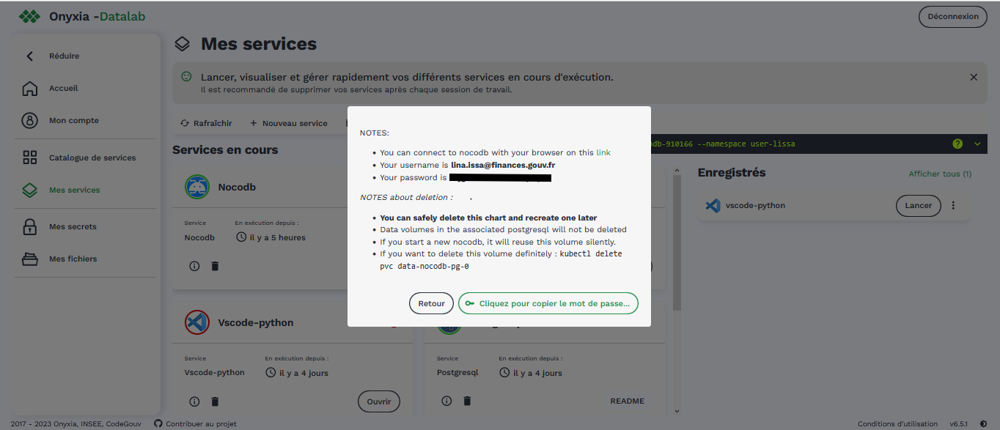

Premiers pas avec Nubonyxia#
Cette page offre une visite guidée de Nubonyxia et donne une desciption pas à pas des différentes étapes du lancement d’un service sur la plateforme.
2- Connexion à la plateforme#
L’accès à la plateforme se fait en utilisant l’identifiant et mot de passe que l’on vous aura communiqué. Nous utilisons keycloak pour gérer l’authentification.
Note
Nous travaillons actuellement à intégrer agent connect à la plateforme. Pour le moment, nous gérons à la main les comptes utilisateurs (pas de fédérateur d’identité).
3- Vue générale de la plateforme#
L’interface du datalab Nubonyxia est très largement inspirée de celle du SSP Cloud. insérer schéma relation entre différentes composantes
A la disposition de l’utilisateur :
4- Lancement d’un service#
Nous avons mis à disposition sur la forge un repo nommé Quick Start avec des scripts de data visualisation prêt-à-être exécutés.
Pour lancer un service, il suffit de se rendre dans l’onglet . Vous pouvez lancer le service IDE de votre choix. Le service lancé apparaît alors dans la page Mes Services. L’accès au service se fait en cliquant sur le bouton Ouvrir. Un mot de passe est alors fourni pour pouvoir accéder au service. Les informations relatives aux tokens peuvent être consultés en cliquant sur l’icône information en bas à gauche du service instancié.
Important
Il est possible de lancer différentes instances d’un même service. Ainsi on peut avoir différent services vscode qui tournent en même temps sur la plateforme. Cela ne s’applique pas pour les services reposant sur des permanent virtual circuit (PVC) à l’instar des services de la catégorie base de données comme Postgresql. Autrement dit, si un service Postgresql est déjà ouvert, il faut d’abord le supprimer avant d’en lancer un nouveau. Il en est de même pour le service Superset.
L’interface Onyxia permet de configurer le service que l’on va lancer comme le montre en détail la section Configuration de services.
Note
Les tokens S3 et git sont déjà pré-configurés.
Après avoir renseigné son token d’accès Gitlab dans le datalab (voir section Configuration du Git pour la première fois), l’utilisateur peut directement cloner le repo en s’identifiant avec son token stocké sous forme de variable d’environnement $GIT_PERSONAL_ACCESS_TOKEN à l’aide de la ligne de commande suivante :
git clone https://<gitlab-user>:$GIT_PERSONAL_ACCESS_TOKEN@forge.dgfip.finances.rie.gouv.fr/<owner>/<repo>.git
où <owner> et <repo> sont à remplacer respectivement par le nom d’utilisateur et le nom du repo Git.
Il est également possible de cloner le repo au lancement du service dans l’interface, comme le montre la section Utilisation de Git avec les services du Datalab.
Dans le service IDE , il est possible de télécharger en complément des librairies Python ou R, grâce au Nexus mis en place par la DGFIP. En effet bien que la plateforme soit isolée d’internet, un point d’accès à Pypi (librairies Python) et CRAN (packages R) est mis en place grâce à un miroir (Nexus de la DGFiP). Il est ainsi possible de réaliser pip install suivi de la librairie de votre choix pour Python et install.package("") pour R.
4- Suppression d’un service#
Les services de développement comme vscode ou jupyter-notebook lancés sur la plateforme n’ont pas pour vocation d’être utilisés ad vitam eternam. De fait, les tokens d’accès expirent au bout d’un certain temps. Il faut donc supprimer le service et en relancer un autre. Pour ce faire, cliquer sur l’icône poubelle figurant en dessous du sevice instancié.
Important
Les ressources nécessaires à la bonne exécution des services sont partagées au sein de la communauté des utilisateurs. Pensez donc à bien supprimer les services que vous n’utlisez plus afin de libérer des ressources.
Warning
Avant de supprimer un service, pensez à bien sauvegarder vos codes et vos données comme illustré dans la section Guide des bonnes pratiques. En effet, pour certains services, la suppression d’une instance est susceptible d’entraîner la suppression de toutes les données associées.
Les services de bases de données s’appuyant sur des PVC, la suppression complète se fait avec la ligne de commande kubectl delete PVC suivi du nom du volume. Cette dernière est indiquée dans la fenêtre qui s’ouvre lors du lancement du service, comme le montre l’image ci-après.
{kind=link}
Important
Pour exécuter la ligne de commande kubectl delete PVC, il faut ouvrir un vscode et sélectionner le role admin dans l’onglet Kubernetes présent dans la configuration (voir section Options de configurations)